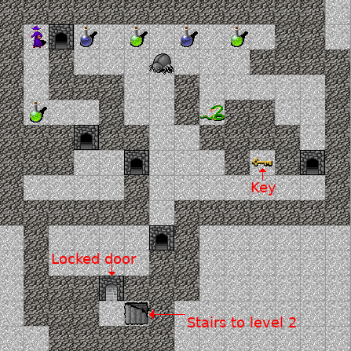

Haskell roguelike - Story
Plot
So far the game is an open world with free play. Very often however you are going to want a bit more structure. This can range from the trivial “you need an x to do a y” to full blow sub-plots. In this chapter we’ll add the former, the player needs to pick up the key to unlock the door to the second level. To make things a bit more interesting lets also add two potions, one to disable darkness and one to enable it again.
19_story/src/EntityType.hs (8 to 21)
data EntityType = Blank
| Door
| DoorClosed
| Wall
| Player
| Bug
| Snake
| Dark
| Stairs
| PotionDark
| PotionLight
| Key
| Unknown
deriving (Show, Eq, Ord)19_story/src/Entities.hs (28 to 30)
, (E.PotionDark , (16, 46), Just "pd")
, (E.PotionLight, ( 8, 46), Just "pl")
, (E.Key , (54, 45), Just "ke")
Story handler
A story handler is the function that decides which actions to perform when an even occurs.
19_story/src/GameCore.hs (110 to 110)
Events
We don’t yet have an event type so lets add one There is only one event type so far, EvtMove. It has
- The actors at the destination
- The entity type at the destination (non-actor)
- The world
- The moving actor
19_story/src/GameCore.hs (131 to 131)
Level
Each level has its own story handlers to control their plot. Since the story handler is now responding to the move events, the level no longer has a lvlTryMove property.
19_story/src/GameCore.hs (97 to 101)
data Level = Level { _lvlName :: !Text
, _lvlBoot :: !(World -> World)
, _lvlMapText :: !Text
, _lvlStoryHandler :: !StoryHandler
}Properties
As the story progresses we are going to need somewhere to store the state of the story. Fortunately back in chapter 16 we added acProps to the actor.
The story handler needs a way to set these properties. We already have ActTogglePlayerProp lets add two more actions to manipulate an actor’s properties
19_story/src/GameCore.hs (118 to 119)
The changes to runAction to handle these actions are quite simple map manipulations.
19_story/src/GameEngine.hs (435 to 439)
ActSetPlayerProp prop valEnabled ->
world & (wdPlayer . plActor . acProps) %~ Map.insert prop valEnabled
ActClearPlayerProp prop ->
world & (wdPlayer . plActor . acProps) %~ Map.delete propChanging entities
Picking up the key will change the closed door to an open door. We need to add one action to replace entities and one to remove them (picking up the key).
19_story/src/GameCore.hs (126 to 127)
These two actions are also implemented as map manipulations. Both check that the entity being operated on (deleted / replaced) is the expected entity. If not, the operation is ignored.
19_story/src/GameEngine.hs (464 to 468)
ActRemoveEntity existingType atWorldPos ->
world & wdMap %~ Map.alter (deleteMapEntity existingType) atWorldPos
ActReplaceEntity existingType atWorldPos newEntity ->
world & wdMap %~ Map.alter (alterMapEntity existingType newEntity) atWorldPos19_story/src/GameEngine.hs (476 to 482)
alterMapEntity :: E.EntityType -> Entity -> Maybe Entity -> Maybe Entity
alterMapEntity _ new Nothing = Just new
alterMapEntity oldType new (Just oldEntity) = if oldType == (oldEntity ^. enType) then Just new else Just oldEntity
deleteMapEntity :: E.EntityType -> Maybe Entity -> Maybe Entity
deleteMapEntity _ Nothing = Nothing
deleteMapEntity oldType (Just oldEntity) = if oldType == (oldEntity ^. enType) then Nothing else Just oldEntityRunning a story
Back in the utility AI chapter I explained why I decided again using a state machine for the AI. For a simple plot however a state machine is perfect. This is because there are a limited number of simple transitions.
Originally I started with a state machine module but that turned out to be overkill. What I ended up with was that each level has a current story handler (the current state its at) and each of these handlers can change the level’s story handler, i.e. perform a transitions
You already saw the level’s lvlStoryHandler above: _lvlStoryHandler :: !StoryHandler
Change story handler action
Lets add the action to change the current story handler
19_story/src/GameCore.hs (123 to 123)
runAction simply changes the current level’s story handler in response to this action.
19_story/src/GameEngine.hs (459 to 460)
Sending events to the story handler
GameEngine’s tryMoveActor must now create a RogueEvent and send it to the level’s story handler. This is not very different from the old code but means that new events can easily be added.
19_story/src/GameEngine.hs (511 to 516)
-- Create move event
evt = EvtMove destActors destEntityType tryWorldTo' actor
-- Run even to get actions
actions = (world ^. wdLevel ^. lvlStoryHandler) world evt
in
Just $ runActions world actions Level’s story handler
When a level is created the default story handler must be set. For level one the story starts waiting for the player to pickup the key.
19_story/src/Levels/Level01.hs (20 to 26)
mkLevel :: Text -> Level
mkLevel mapText =
Level { _lvlName = "L01"
, _lvlBoot = bootLevel
, _lvlMapText = mapText
, _lvlStoryHandler = storyWaitingForKey
}Shared logic
Once you start designing your story logic (state machine) you will quickly realise that most of the story handlers have to deal with the same event the same way. E.g. stepping on a blank tile is the same for all the handlers. I’m managing this by having a shared handler (storyCommon) that each of the other handlers can call if they are not handling the event. This means that story handlers can override whatever default behavior they need to.
storyCommon
storyCommon handles basic collisions. It also handles the logic of the player stepping on one of the two potions.
19_story/src/Levels/Level01.hs (73 to 94)
storyCommon :: World -> RogueEvent -> [RogueAction]
storyCommon world evt =
case evt of
EvtMove destActors destEntityType posTo movingActor ->
let isPlayer = isPlayerMoving world movingActor in
case (isPlayer, destActors, destEntityType) of
(_, [], Just E.Blank) -> [ActMoveActor movingActor posTo]
(_, [], Just E.Door) -> [ActMoveActor movingActor posTo]
(_, [], Nothing) -> [ActMoveActor movingActor posTo]
-- Only the player can pickup potions. Set lights on
(True, [], Just E.PotionLight) -> [ ActMoveActor movingActor posTo
, ActSetPlayerProp "debug:light" "on"
, ActRemoveEntity E.PotionLight posTo
]
-- Only the player can pickup potions. Set lights off
(True, [], Just E.PotionDark) -> [ ActMoveActor movingActor posTo
, ActClearPlayerProp "debug:light"
, ActRemoveEntity E.PotionDark posTo
]
_ -> []- The code checks if its the player that is moving
- Stepping on a door, blank space or nothing is allowed
- Stepping on a potion will
- Let the player move
- Set the appropriate property to toggle darkness
- Remove the potion, as it has been picked up
19_story/src/Levels/Level01.hs (141 to 143)
isPlayerMoving :: World -> Actor -> Bool
isPlayerMoving w a =
w ^. wdPlayer ^. plActor ^. acId == a ^. acIdstoryWaitingForKey
19_story/src/Levels/Level01.hs (99 to 124)
storyWaitingForKey :: World -> RogueEvent -> [RogueAction]
storyWaitingForKey world evt =
case evt of
EvtMove destActors destEntityType posTo movingActor ->
let isPlayer = isPlayerMoving world movingActor in
case (isPlayer, destActors, destEntityType) of
-- Player picked up the key
(True, [], Just E.Key) ->
[ ActMoveActor movingActor posTo
, ActSetStoryHandler storyDoorOpen
, ActRemoveEntity E.Key posTo
] <>
-- Replace all closed doors with open ones
((\closedDoorAt -> ActReplaceEntity E.DoorClosed closedDoorAt $ E.getEntity E.Door) <$> findPos E.DoorClosed)
_ -> storyCommon world evt
where
findPos :: E.EntityType -> [WorldPos]
findPos et =
let
es = Map.toList $ world ^. wdMap
found = filter (\(_, e) -> e ^. enType == et) es
in
fst <$> found- If the player steps on a key.
- Then
- Allow the move
- Change the story handler to storyDoorOpen (state transition)
- Remove the entity (pick it up)
- Change all closed doors to open ones
- Else
- Run storyCommon
storyDoorOpen
19_story/src/Levels/Level01.hs (129 to 136)
storyDoorOpen :: World -> RogueEvent -> [RogueAction]
storyDoorOpen world evt =
case evt of
EvtMove destActors destEntityType posTo movingActor ->
case (destActors, destEntityType) of
([], Just E.Key) -> [ActMoveActor movingActor posTo]
(_, Just E.Stairs) -> [ActGotoLevel Levels02]
_ -> storyCommon world evt- Picking up keys does nothing anymore, the door is already open
- If the player steps on the stairs then go to level two
- Otherwise run storyCommon
Multiple levels with plot
With these changes the game now supports different levels each with a different plot. Not bad at all
Chapters
Changes
src/Entities.hs
diff -w -B -a -d -u -b -r --new-file 18_multi_level/src/Entities.hs 19_story/src/Entities.hs
--- 18_multi_level/src/Entities.hs
+++ 19_story/src/Entities.hs
@@ -23,9 +23,12 @@
, (E.Bug , (25, 3), Nothing)
, (E.Snake , (38, 4), Nothing)
, (E.Dark , (43, 11), Nothing)
-
, (E.Stairs , (56, 44), Just "s")
+ , (E.PotionDark , (16, 46), Just "pd")
+ , (E.PotionLight, ( 8, 46), Just "pl")
+ , (E.Key , (54, 45), Just "ke")
+
]
in
let mkData (typ, pos@(x, y), l) (tiles', entities', loads') =
src/EntityType.hs
diff -w -B -a -d -u -b -r --new-file 18_multi_level/src/EntityType.hs 19_story/src/EntityType.hs
--- 18_multi_level/src/EntityType.hs
+++ 19_story/src/EntityType.hs
@@ -14,6 +14,9 @@
| Snake
| Dark
| Stairs
+ | PotionDark
+ | PotionLight
+ | Key
| Unknown
deriving (Show, Eq, Ord)
src/GameCore.hs
diff -w -B -a -d -u -b -r --new-file 18_multi_level/src/GameCore.hs 19_story/src/GameCore.hs
--- 18_multi_level/src/GameCore.hs
+++ 19_story/src/GameCore.hs
@@ -99,7 +97,7 @@
data Level = Level { _lvlName :: !Text
, _lvlBoot :: !(World -> World)
, _lvlMapText :: !Text
- , _lvlTryMove :: !([Actor] -> Maybe E.EntityType -> World -> WorldPos -> Actor -> [RogueAction])
+ , _lvlStoryHandler :: !StoryHandler
}
@@ -107,17 +104,32 @@
data Levels = Levels01
| Levels02
-
newtype WorldPos = WorldPos (Int, Int) deriving (Show, Eq, Ord)
newtype PlayerPos = PlayerPos (Int, Int) deriving (Show, Eq, Ord)
+type StoryHandler = World -> RogueEvent -> [RogueAction]
+
data RogueAction = ActMovePlayer (Int, Int)
| ActMoveActor Actor WorldPos
| ActSetPlayerViewPortStyle ViewPortStyle
| ActTogglePlayerProp Text Text
+
+ | ActClearPlayerProp Text
+ | ActSetPlayerProp Text Text
+
| ActGotoLevel Levels
+ | ActSetStoryHandler StoryHandler
+
+
+ | ActRemoveEntity E.EntityType WorldPos
+ | ActReplaceEntity E.EntityType WorldPos Entity
+
+
+
+data RogueEvent = EvtMove [Actor] (Maybe E.EntityType) WorldPos Actor
+
data ViewPortStyle = ViewPortCentre
| ViewPortLock PlayerPos
src/GameEngine.hs
diff -w -B -a -d -u -b -r --new-file 18_multi_level/src/GameEngine.hs 19_story/src/GameEngine.hs
--- 18_multi_level/src/GameEngine.hs
+++ 19_story/src/GameEngine.hs
@@ -432,6 +432,13 @@
world & (wdPlayer . plActor . acProps) %~ Map.alter (toggleMapProp valEnabled) prop
+ ActSetPlayerProp prop valEnabled ->
+ world & (wdPlayer . plActor . acProps) %~ Map.insert prop valEnabled
+
+ ActClearPlayerProp prop ->
+ world & (wdPlayer . plActor . acProps) %~ Map.delete prop
+
+
ActMoveActor actor worldPos ->
let
movedActor = actor & acWorldPos .~ worldPos
@@ -451,11 +456,33 @@
l
+ ActSetStoryHandler h ->
+ world & (wdLevel . lvlStoryHandler) .~ h
+
+
+
+ ActRemoveEntity existingType atWorldPos ->
+ world & wdMap %~ Map.alter (deleteMapEntity existingType) atWorldPos
+
+ ActReplaceEntity existingType atWorldPos newEntity ->
+ world & wdMap %~ Map.alter (alterMapEntity existingType newEntity) atWorldPos
+
+
where
toggleMapProp v Nothing = Just v
toggleMapProp _ (Just _) = Nothing
+ alterMapEntity :: E.EntityType -> Entity -> Maybe Entity -> Maybe Entity
+ alterMapEntity _ new Nothing = Just new
+ alterMapEntity oldType new (Just oldEntity) = if oldType == (oldEntity ^. enType) then Just new else Just oldEntity
+
+ deleteMapEntity :: E.EntityType -> Maybe Entity -> Maybe Entity
+ deleteMapEntity _ Nothing = Nothing
+ deleteMapEntity oldType (Just oldEntity) = if oldType == (oldEntity ^. enType) then Nothing else Just oldEntity
+
+
+
tryMoveActor :: World -> Actor -> (Int, Int) -> Maybe World
tryMoveActor world actor (dx, dy) =
let
@@ -481,8 +508,10 @@
-- Actors at destination
destActors = filter (\a -> a ^. acWorldPos == tryWorldTo') (getAllActors world)
- -- Get actions
- actions = (world ^. wdLevel ^. lvlTryMove) destActors destEntityType world tryWorldTo' actor
+ -- Create move event
+ evt = EvtMove destActors destEntityType tryWorldTo' actor
+ -- Run even to get actions
+ actions = (world ^. wdLevel ^. lvlStoryHandler) world evt
in
Just $ runActions world actions
src/Levels/Level01.hs
diff -w -B -a -d -u -b -r --new-file 18_multi_level/src/Levels/Level01.hs 19_story/src/Levels/Level01.hs
--- 18_multi_level/src/Levels/Level01.hs
+++ 19_story/src/Levels/Level01.hs
@@ -1,7 +1,7 @@
{-# LANGUAGE NoImplicitPrelude #-}
{-# LANGUAGE OverloadedStrings #-}
-module Levels.Level01 where
+module Levels.Level01 (mkLevel) where
import Protolude hiding (Map)
import qualified Data.Set as Set
@@ -16,13 +16,16 @@
import qualified BoundedInt as B
import qualified UtilityBrain as UB
+
mkLevel :: Text -> Level
-mkLevel mapData = Level { _lvlName = "L01"
+mkLevel mapText =
+ Level { _lvlName = "L01"
, _lvlBoot = bootLevel
- , _lvlMapText = mapData
- , _lvlTryMove = tryMove
+ , _lvlMapText = mapText
+ , _lvlStoryHandler = storyWaitingForKey
}
+
bootLevel :: World -> World
bootLevel w1 =
let
@@ -66,13 +69,76 @@
}
-tryMove :: [Actor] -> Maybe E.EntityType -> World -> WorldPos -> Actor -> [RogueAction]
-tryMove destActors destEntityType _ posTo movingActor =
- -- Is the move allowed
+
+storyCommon :: World -> RogueEvent -> [RogueAction]
+storyCommon world evt =
+ case evt of
+ EvtMove destActors destEntityType posTo movingActor ->
+ let isPlayer = isPlayerMoving world movingActor in
+ case (isPlayer, destActors, destEntityType) of
+ (_, [], Just E.Blank) -> [ActMoveActor movingActor posTo]
+ (_, [], Just E.Door) -> [ActMoveActor movingActor posTo]
+ (_, [], Nothing) -> [ActMoveActor movingActor posTo]
+
+ -- Only the player can pickup potions. Set lights on
+ (True, [], Just E.PotionLight) -> [ ActMoveActor movingActor posTo
+ , ActSetPlayerProp "debug:light" "on"
+ , ActRemoveEntity E.PotionLight posTo
+ ]
+
+ -- Only the player can pickup potions. Set lights off
+ (True, [], Just E.PotionDark) -> [ ActMoveActor movingActor posTo
+ , ActClearPlayerProp "debug:light"
+ , ActRemoveEntity E.PotionDark posTo
+ ]
+ _ -> []
+
+
+
+
+storyWaitingForKey :: World -> RogueEvent -> [RogueAction]
+storyWaitingForKey world evt =
+ case evt of
+ EvtMove destActors destEntityType posTo movingActor ->
+ let isPlayer = isPlayerMoving world movingActor in
+
+ case (isPlayer, destActors, destEntityType) of
+ -- Player picked up the key
+ (True, [], Just E.Key) ->
+ [ ActMoveActor movingActor posTo
+ , ActSetStoryHandler storyDoorOpen
+ , ActRemoveEntity E.Key posTo
+ ] <>
+ -- Replace all closed doors with open ones
+ ((\closedDoorAt -> ActReplaceEntity E.DoorClosed closedDoorAt $ E.getEntity E.Door) <$> findPos E.DoorClosed)
+
+ _ -> storyCommon world evt
+
+ where
+ findPos :: E.EntityType -> [WorldPos]
+ findPos et =
+ let
+ es = Map.toList $ world ^. wdMap
+ found = filter (\(_, e) -> e ^. enType == et) es
+ in
+ fst <$> found
+
+
+
+
+storyDoorOpen :: World -> RogueEvent -> [RogueAction]
+storyDoorOpen world evt =
+ case evt of
+ EvtMove destActors destEntityType posTo movingActor ->
case (destActors, destEntityType) of
- ([], Just E.Blank) -> [ActMoveActor movingActor posTo]
- ([], Just E.Door) -> [ActMoveActor movingActor posTo]
- ([], Nothing) -> [ActMoveActor movingActor posTo]
+ ([], Just E.Key) -> [ActMoveActor movingActor posTo]
(_, Just E.Stairs) -> [ActGotoLevel Levels02]
- _ -> []
+ _ -> storyCommon world evt
+
+
+
+
+isPlayerMoving :: World -> Actor -> Bool
+isPlayerMoving w a =
+ w ^. wdPlayer ^. plActor ^. acId == a ^. acId
src/Levels/Level02.hs
diff -w -B -a -d -u -b -r --new-file 18_multi_level/src/Levels/Level02.hs 19_story/src/Levels/Level02.hs
--- 18_multi_level/src/Levels/Level02.hs
+++ 19_story/src/Levels/Level02.hs
@@ -1,7 +1,7 @@
{-# LANGUAGE NoImplicitPrelude #-}
{-# LANGUAGE OverloadedStrings #-}
-module Levels.Level02 where
+module Levels.Level02 (mkLevel) where
import Protolude
@@ -10,19 +10,22 @@
mkLevel :: Text -> Level
-mkLevel mapData = Level { _lvlName = "L02"
+mkLevel mapText =
+ Level { _lvlName = "L02"
, _lvlBoot = bootLevel
- , _lvlMapText = mapData
- , _lvlTryMove = tryMove
+ , _lvlMapText = mapText
+ , _lvlStoryHandler = storySimple
}
+
bootLevel :: World -> World
bootLevel w = w
-tryMove :: [Actor] -> Maybe E.EntityType -> World -> WorldPos -> Actor -> [RogueAction]
-tryMove destActors destEntityType _ posTo movingActor =
- -- Is the move allowed
+storySimple :: World -> RogueEvent -> [RogueAction]
+storySimple _ evt =
+ case evt of
+ EvtMove destActors destEntityType posTo movingActor ->
case (destActors, destEntityType) of
([], Just E.Blank) -> [ActMoveActor movingActor posTo]
([], Just E.Door) -> [ActMoveActor movingActor posTo]